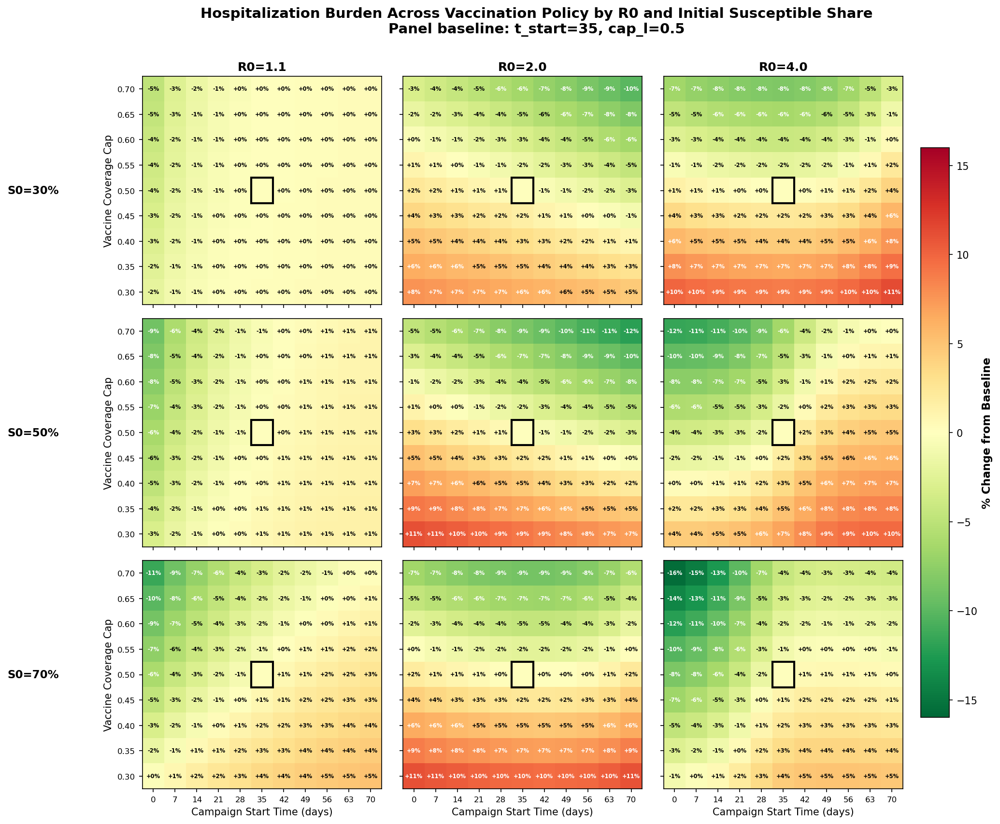
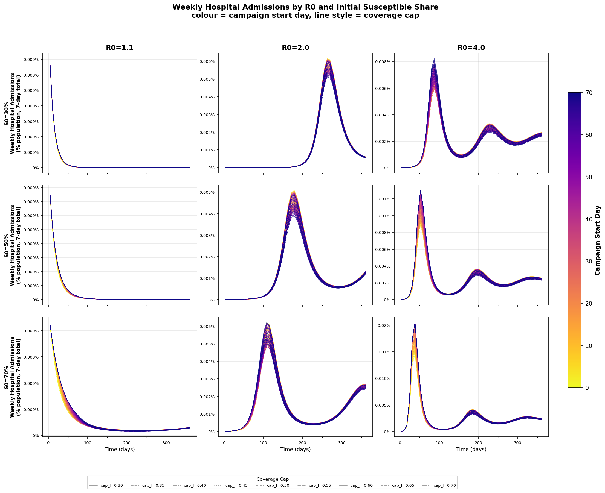
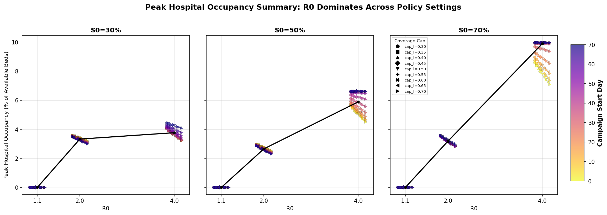

Vaccination Campaign Scenario Grid Example¶
This guide walks through a policy-sweep SIRHD model with vaccination strata, and shows how to set up the configuration and figure-generation workflow in flepimop2.
This example uses op_system for transition-based model specification and op_engine for numerical integration, using a vaccination axis with compartments u (unvaccinated), v (vaccinated/protected), and w (vaccinated but waned). This pairing keeps the disease dynamics readable in configuration while delegating solver behavior to the engine layer.
1. Start from a New Repository¶
Create a fresh repo and scaffold the project skeleton:
Then typejust. Followed by conda activate ./venv.You are now ready to use flepimop2.
2. Get the Example Config and Plot Scripts¶
Copy the files below into your project. Each block can be expanded to view and copy the full source, or downloaded directly via the filename link.
Suggested placement in your new project:
configs/SIRHD_vax_scenario_grid.ymlpostprocessing/scenario_heatmap_3x3.pypostprocessing/scenario_spaghetti_incidence.pypostprocessing/scenario_peak_bed_summary.py
Configuration - configs/SIRHD_vax_scenario_grid.yml
---
name: SIRHD_vax_scenario_grid
system:
- module: op_system
state_change: flow
spec:
kind: transitions
axes:
- name: vax
coords: [u, v, w]
state:
- S[vax]
- I[vax]
- H[vax]
- R[vax]
- D
aliases:
# yamllint disable-line rule:line-length
N: "sum_over(vax=j, S[vax=j] + I[vax=j] + H[vax=j] + R[vax=j])"
lam: "(r0 / t_inf) * sum_over(vax=j, I[vax=j]) / N"
rho_eff[vax]: "q[vax] * rho"
delta_eff[vax]: "q[vax] * delta"
pop[vax]: "S[vax] + I[vax] + H[vax] + R[vax]"
coverage: "sum_over(vax=j IN [v, w], pop[vax=j]) / n0"
rollout: "1.0 - np.exp(-ramp * np.maximum(0.0, t - t_start))"
# yamllint disable-line rule:line-length
u: "np.maximum(0.0, k * (cap_l - coverage)) * rollout"
transitions:
- from: S[vax]
to: I[vax]
rate: lam
- from: I[vax]
to: H[vax]
rate: rho_eff[vax] / t_inf
- from: I[vax]
to: R[vax]
rate: (1 - rho_eff[vax]) / t_inf
- from: H[vax]
to: D
rate: delta_eff[vax] / t_hosp
- from: H[vax]
to: R[vax]
rate: (1 - delta_eff[vax]) / t_hosp
- from: R[vax]
to: S[vax]
rate: alpha
- coord_shift:
vax: "u -> v"
apply_to: [S, R]
rate: u
- coord_shift:
vax: "v -> w"
apply_to: [S, R]
rate: omega
initial_state:
S[vax]: s0[vax]
H[vax]: h0[vax]
I[vax]: i0[vax]
R[vax]: r0[vax]
D: d0
engine:
- module: op_engine
state_change: flow
config:
method: heun
adaptive: true
rtol: 1.0e-3
atol: 1.0e-5
dt_min: 1.0e-10
dt_max: 2.0
safety: 0.9
scenarios:
vax_campaign:
module: grid
parameters:
t_start: [0, 7, 14, 21, 28, 35, 42, 49, 56, 63, 70]
cap_l: [0.30, 0.35, 0.40, 0.45, 0.50, 0.55, 0.60, 0.65, 0.70]
panel_grid:
module: grid
parameters:
r0: [1.1, 2.0, 4.0]
# susceptible-compartment share at t=0 (S only, not S+I+R)
s_frac: [0.3, 0.5, 0.7]
simulate:
demo:
times: "0.0:1.0:364.0"
scenario_sweep:
times: "0.0:1.0:364.0"
scenario: vax_campaign
backend:
- module: csv
root: model_output/SIRHD_vax
process:
plot:
module: shell
command: python postprocessing/SIRHD_incidence_plot.py
args:
- configs/SIRHD_vax_scenario_grid.yml
- model_output/plots/SIRHD_vax_plot.png
scenario_heatmap:
module: shell
command: python postprocessing/scenario_heatmap.py
args:
- configs/SIRHD_vax_scenario_grid.yml
- model_output/plots/SIRHD_vax_scenario_heatmap.png
scenario_heatmap_3x3_plot_latest_batch:
module: shell
command: python postprocessing/scenario_heatmap_3x3.py
args:
- configs/SIRHD_vax_scenario_grid.yml
- model_output/plots/SIRHD_vax_scenario_heatmap_3x3.png
- --burden-only
scenario_heatmap_3x3_run_batch_and_plot:
module: shell
command: python postprocessing/scenario_heatmap_3x3.py
args:
- configs/SIRHD_vax_scenario_grid.yml
- model_output/plots/SIRHD_vax_scenario_heatmap_3x3.png
- --run
- --burden-only
scenario_spaghetti_incidence:
module: shell
command: python postprocessing/scenario_spaghetti_incidence.py
args:
- configs/SIRHD_vax_scenario_grid.yml
- model_output/plots/SIRHD_vax_spaghetti_incidence.png
scenario_peak_bed_summary:
module: shell
command: python postprocessing/scenario_peak_bed_summary.py
args:
- configs/SIRHD_vax_scenario_grid.yml
- model_output/plots/SIRHD_vax_peak_bed_summary.png
parameter:
r0:
module: fixed
value: 2.0
t_inf:
module: fixed
value: 7.0
rho:
module: fixed
value: 0.001
delta:
module: fixed
value: 0.1
t_hosp:
module: fixed
value: 10.0
alpha:
module: fixed
value: 0.005
k:
module: fixed
value: 0.05
cap_l:
module: fixed
value: 0.5
t_start:
module: fixed
value: 35.0
ramp:
module: fixed
value: 0.5
n0:
module: fixed
value: 10000000.0
omega:
module: fixed
value: 0.005
q__vax_u:
module: fixed
value: 1.0
q__vax_v:
module: fixed
value: 0.3
q__vax_w:
module: fixed
value: 1.0
s0__vax_u:
module: fixed
value: 5000000
s0__vax_v:
module: fixed
value: 0
s0__vax_w:
module: fixed
value: 0
i0__vax_u:
module: fixed
value: 1000
i0__vax_v:
module: fixed
value: 0
i0__vax_w:
module: fixed
value: 0
h0__vax_u:
module: fixed
value: 0
h0__vax_v:
module: fixed
value: 0
h0__vax_w:
module: fixed
value: 0
r0__vax_u:
module: fixed
value: 4999000
r0__vax_v:
module: fixed
value: 0
r0__vax_w:
module: fixed
value: 0
d0:
module: fixed
value: 0
Plot Script - postprocessing/scenario_heatmap_3x3.py
"""Run coarse R0/S0 sweeps and generate legacy 3x3 panel plots.
Rows: susceptible share at t=0 (S0 fraction): 30%, 50%, 70%
Cols: basic reproduction number R0: 1.1, 2.0, 4.0
Each panel is a t_start x cap_l heatmap with these outputs:
1. Hospitalization burden (% change from panel baseline policy)
2. Peak hospitalization day relative to campaign start (days)
3. Peak hospital occupancy as % of available beds
"""
from __future__ import annotations
import copy
import dataclasses
import logging
import math
import re
import shutil
import subprocess # noqa: S404
import sys
import tempfile
from dataclasses import dataclass
from datetime import UTC, datetime
from pathlib import Path
from typing import TYPE_CHECKING, Any, Literal, cast
import numpy as np
import yaml
try:
import matplotlib.patches as mpatches
import matplotlib.pyplot as plt
import pandas as pd
from matplotlib import cm, colors
except ModuleNotFoundError:
mpatches = cast("Any", None)
plt = cast("Any", None)
pd = cast("Any", None)
cm = cast("Any", None)
colors = cast("Any", None)
from flepimop2.configuration import ConfigurationModel
if TYPE_CHECKING:
from matplotlib.axes import Axes
ARG_LEN_MIN = 2
EXPECTED_POSITIONAL_BURDEN_ONLY = 2
EXPECTED_POSITIONAL_ALL_METRICS = 4
SWEEP_SCENARIO_NAME = "vax_campaign"
PANEL_SCENARIO_NAME = "panel_grid"
BEDS_PER_1000 = 2.3
LOGGER = logging.getLogger(__name__)
MetricName = Literal["burden", "peak_day", "peak_bed_pct"]
_BED_PCT_INTEGER_THRESHOLD = 100.0
@dataclass(frozen=True)
class PanelMetrics:
"""Metric matrices for one (r0, s_frac) panel."""
burden_pct_change: np.ndarray
peak_day_relative: np.ndarray
peak_bed_pct: np.ndarray
@dataclass(frozen=True)
class PlotMeta:
"""Metadata used to render panel figures."""
t_start_vals: list[float]
cap_l_vals: list[float]
r0_values: list[float]
s_frac_values: list[float]
default_t_start: float
default_cap_l: float
@dataclass(frozen=True)
class PanelDrawMeta:
"""Metadata needed to draw one subplot panel."""
r0_val: float
s_frac: float
show_title: bool
show_row_label: bool
show_xlabel: bool
t_start_vals: list[float]
cap_l_vals: list[float]
default_x: int | None
default_y: int | None
@dataclass(frozen=True)
class FigureSpec:
"""Rendering rules for each output figure."""
metric: MetricName
title: str
cbar_label: str
cmap: str
symmetric_about_zero: bool
output_path: Path
vmin: float = 0.0
vmax: float = 1.0
@dataclass(frozen=True)
class PanelMetricMeta:
"""Inputs used to compute panel metric matrices."""
t_start_vals: list[float]
cap_l_vals: list[float]
default_t_start: float
default_cap_l: float
available_beds: float
def _latest_csv_by_index(
results_dir: Path, pattern: str = "scenario_*.csv"
) -> list[Path]:
"""Get one CSV per scenario index (latest file by name), sorted numerically."""
by_index: dict[int, Path] = {}
for f in results_dir.glob(pattern):
match = re.search(r"scenario_(\d+)", f.name)
if not match:
continue
idx = int(match.group(1))
if idx not in by_index or f.name > by_index[idx].name:
by_index[idx] = f
return [by_index[i] for i in sorted(by_index)]
def _find_value_index(
values: list[float], target: float, tol: float = 1e-9
) -> int | None:
"""Return the index of `target` within tolerance, else `None`."""
for i, value in enumerate(values):
if abs(float(value) - target) <= tol:
return i
return None
def _slug_float(value: float) -> str:
"""Convert a float to a filesystem-safe token."""
return f"{value:.3f}".rstrip("0").rstrip(".").replace(".", "p")
def _set_param(cfg: dict[str, Any], name: str, value: float) -> None:
"""Set a scalar parameter value in raw YAML config."""
params = cfg.setdefault("parameter", {})
if name not in params:
msg = f"Missing parameter '{name}' in config"
raise KeyError(msg)
params[name]["value"] = float(value)
def _set_backend_root(cfg: dict[str, Any], root: str) -> None:
"""Set backend output root in raw YAML config."""
backend = cfg.get("backend", [])
if not backend:
msg = "Config has no backend section"
raise ValueError(msg)
if not isinstance(backend, list):
msg = "backend section must be a list"
raise TypeError(msg)
backend[0]["root"] = root
def _scenario_param_values(
cfg: dict[str, Any],
scenario_name: str,
param_name: str,
) -> list[float]:
"""Read scenario parameter values from raw YAML config."""
scenarios = cfg.get("scenarios")
if not isinstance(scenarios, dict):
msg = "No scenarios mapping found in config"
raise TypeError(msg)
scenario = scenarios.get(scenario_name)
if not isinstance(scenario, dict):
msg = f"Scenario {scenario_name!r} not found in config.scenarios"
raise KeyError(msg)
params = scenario.get("parameters")
if not isinstance(params, dict):
msg = f"Scenario {scenario_name!r} has no parameters mapping"
raise TypeError(msg)
if param_name not in params:
msg = f"Parameter {param_name!r} not found in scenarios[{scenario_name!r}]"
raise KeyError(msg)
return [float(v) for v in params[param_name]]
def _extract_panel_metrics( # noqa: PLR0914
results_dir: Path,
metric_meta: PanelMetricMeta,
) -> PanelMetrics:
"""Build panel matrices for all metrics."""
csv_files = _latest_csv_by_index(results_dir)
expected = len(metric_meta.t_start_vals) * len(metric_meta.cap_l_vals)
if len(csv_files) != expected:
msg = (
f"Expected {expected} scenario files in {results_dir}, "
f"found {len(csv_files)}. "
"Check that scenario_sweep completed for this panel."
)
raise ValueError(msg)
h_col_indices = [7, 8, 9]
burden = np.zeros((len(metric_meta.cap_l_vals), len(metric_meta.t_start_vals)))
peak_day_relative = np.zeros((
len(metric_meta.cap_l_vals),
len(metric_meta.t_start_vals),
))
peak_bed_pct = np.zeros((
len(metric_meta.cap_l_vals),
len(metric_meta.t_start_vals),
))
for scenario_idx, csv_file in enumerate(csv_files):
df = pd.read_csv(csv_file, header=None)
time = df.iloc[:, 0].to_numpy()
h_totals = df.iloc[:, h_col_indices].sum(axis=1).to_numpy()
t_start_idx = scenario_idx // len(metric_meta.cap_l_vals)
cap_l_idx = scenario_idx % len(metric_meta.cap_l_vals)
burden[cap_l_idx, t_start_idx] = float(np.trapezoid(h_totals, time))
peak_idx = int(np.argmax(h_totals))
peak_time = float(time[peak_idx])
peak_h = float(h_totals[peak_idx])
peak_day_relative[cap_l_idx, t_start_idx] = peak_time
peak_bed_pct[cap_l_idx, t_start_idx] = (
100.0 * peak_h / metric_meta.available_beds
)
default_x = _find_value_index(
[float(v) for v in metric_meta.t_start_vals],
metric_meta.default_t_start,
)
default_y = _find_value_index(
[float(v) for v in metric_meta.cap_l_vals],
metric_meta.default_cap_l,
)
if default_x is None or default_y is None:
msg = "Default t_start/cap_l is not on scenario grid"
raise ValueError(msg)
baseline = burden[default_y, default_x]
if baseline <= 0:
msg = f"Non-positive panel baseline in {results_dir}: {baseline}"
raise ValueError(msg)
return PanelMetrics(
burden_pct_change=(burden / baseline - 1.0) * 100.0,
peak_day_relative=peak_day_relative,
peak_bed_pct=peak_bed_pct,
)
def _run_panel_simulation(
base_cfg: dict[str, Any],
cfg_path: Path,
out_dir: Path,
r0_value: float,
s_frac: float,
) -> None:
"""Run one t_start x cap_l panel into an isolated output directory."""
cfg = copy.deepcopy(base_cfg)
n0 = float(cfg["parameter"]["n0"]["value"])
i0_total = sum(
float(v["value"])
for k, v in cfg["parameter"].items()
if k.startswith("i0__vax_")
)
h0_total = sum(
float(v["value"])
for k, v in cfg["parameter"].items()
if k.startswith("h0__vax_")
)
s0_non_u = sum(
float(v["value"])
for k, v in cfg["parameter"].items()
if k.startswith("s0__vax_") and k != "s0__vax_u"
)
r0_non_u = sum(
float(v["value"])
for k, v in cfg["parameter"].items()
if k.startswith("r0__vax_") and k != "r0__vax_u"
)
s0 = s_frac * n0 - s0_non_u
if s0 < 0:
msg = f"Computed negative susceptible initial state for s_frac={s_frac}: {s0}"
raise ValueError(msg)
r0_init = n0 - s0 - s0_non_u - i0_total - h0_total - r0_non_u
if r0_init < 0:
msg = (
f"Computed negative recovered initial state for s_frac={s_frac}: {r0_init}"
)
raise ValueError(msg)
_set_param(cfg, "r0", r0_value)
_set_param(cfg, "s0__vax_u", s0)
_set_param(cfg, "r0__vax_u", r0_init)
out_dir.mkdir(parents=True, exist_ok=True)
_set_backend_root(cfg, str(out_dir))
with tempfile.NamedTemporaryFile(
"w", suffix=".yml", delete=False, encoding="utf-8"
) as tmp:
yaml.safe_dump(cfg, tmp, sort_keys=False)
tmp_cfg_path = Path(tmp.name)
try:
flepimop2_exe = shutil.which("flepimop2")
if flepimop2_exe is None:
msg = "flepimop2 executable not found in PATH"
raise FileNotFoundError(msg)
subprocess.run( # noqa: S603
[
flepimop2_exe,
"simulate",
str(tmp_cfg_path),
"-t",
"scenario_sweep",
],
check=True,
cwd=cfg_path.parent.parent,
)
finally:
tmp_cfg_path.unlink(missing_ok=True)
def _normalize_axes(
axes: np.ndarray,
n_rows: int,
n_cols: int,
) -> np.ndarray:
"""Normalize matplotlib subplot axes to a 2D array."""
if n_rows == 1 and n_cols == 1:
return np.array([[axes]])
if n_rows == 1:
return np.array([axes])
if n_cols == 1:
return np.array([[ax] for ax in axes])
return axes
def _metric_matrix(panel_metrics: PanelMetrics, metric: MetricName) -> np.ndarray:
"""Select the metric matrix for plotting."""
if metric == "burden":
return panel_metrics.burden_pct_change
if metric == "peak_day":
return panel_metrics.peak_day_relative
return panel_metrics.peak_bed_pct
def _annotation_text(metric: MetricName, value: float) -> str:
"""Format per-cell annotation text for each metric."""
if metric == "burden":
return f"{round(value):+d}%"
if metric == "peak_day":
return f"d{round(value):d}"
# peak_bed_pct: use integer when ≥100 to prevent cell overflow
if abs(value) >= _BED_PCT_INTEGER_THRESHOLD:
return f"{round(value):d}%"
return f"{value:.1f}%"
def _draw_panel(
ax: Axes,
values: np.ndarray,
panel_meta: PanelDrawMeta,
figure_spec: FigureSpec,
) -> None:
"""Draw one panel with shared global color limits from figure_spec."""
vmin = figure_spec.vmin
vmax = figure_spec.vmax
ax.imshow(
values,
cmap=figure_spec.cmap,
aspect="auto",
origin="lower",
vmin=vmin,
vmax=vmax,
)
for i in range(len(panel_meta.cap_l_vals)):
for j in range(len(panel_meta.t_start_vals)):
if (
panel_meta.default_x is not None
and panel_meta.default_y is not None
and i == panel_meta.default_y
and j == panel_meta.default_x
):
continue
val = float(values[i, j])
threshold = 0.35 * max(abs(vmin), abs(vmax), 1.0)
text_color = "black" if abs(val) < threshold else "white"
ax.text(
j,
i,
_annotation_text(figure_spec.metric, val),
ha="center",
va="center",
color=text_color,
fontsize=5.5,
fontweight="bold",
)
if panel_meta.default_x is not None and panel_meta.default_y is not None:
ax.add_patch(
mpatches.Rectangle(
(panel_meta.default_x - 0.5, panel_meta.default_y - 0.5),
1.0,
1.0,
fill=False,
edgecolor="black",
linewidth=2.0,
),
)
if panel_meta.show_title:
ax.set_title(f"R0={panel_meta.r0_val:.1f}", fontsize=12, fontweight="bold")
ax.set_xticks(range(len(panel_meta.t_start_vals)))
ax.set_xticklabels([str(int(v)) for v in panel_meta.t_start_vals], fontsize=8)
ax.set_yticks(range(len(panel_meta.cap_l_vals)))
ax.set_yticklabels([f"{v:.2f}" for v in panel_meta.cap_l_vals], fontsize=8)
if panel_meta.show_row_label:
ax.text(
-0.35,
0.5,
f"S0={round(panel_meta.s_frac * 100)}%",
transform=ax.transAxes,
ha="right",
va="center",
fontsize=11,
fontweight="bold",
)
ax.set_ylabel("Vaccine Coverage Cap")
if panel_meta.show_xlabel:
ax.set_xlabel("Campaign Start Time (days)")
def _make_panel_figure(
panel_data: dict[tuple[float, float], PanelMetrics],
plot_meta: PlotMeta,
figure_spec: FigureSpec,
) -> None:
"""Render one metric figure as a 3x3 panel plot with a shared global color scale."""
# Compute global vmin/vmax across all panels so the shared colorbar is accurate.
all_values = [_metric_matrix(pm, figure_spec.metric) for pm in panel_data.values()]
if figure_spec.symmetric_about_zero:
global_abs_max = max(
1.0,
float(math.ceil(max(float(np.abs(v).max()) for v in all_values))),
)
spec = dataclasses.replace(
figure_spec, vmin=-global_abs_max, vmax=global_abs_max
)
else:
global_min = float(min(float(v.min()) for v in all_values))
global_max = float(max(float(v.max()) for v in all_values))
if global_min == global_max:
global_min -= 0.5
global_max += 0.5
spec = dataclasses.replace(figure_spec, vmin=global_min, vmax=global_max)
fig, axes = plt.subplots(
nrows=len(plot_meta.s_frac_values),
ncols=len(plot_meta.r0_values),
figsize=(16, 12),
sharex=True,
sharey=True,
)
axes = _normalize_axes(axes, len(plot_meta.s_frac_values), len(plot_meta.r0_values))
default_x = _find_value_index(
[float(v) for v in plot_meta.t_start_vals],
plot_meta.default_t_start,
)
default_y = _find_value_index(
[float(v) for v in plot_meta.cap_l_vals],
plot_meta.default_cap_l,
)
for row, s_frac in enumerate(plot_meta.s_frac_values):
for col, r0_val in enumerate(plot_meta.r0_values):
panel_metrics = panel_data[r0_val, s_frac]
values = _metric_matrix(panel_metrics, spec.metric)
panel_meta = PanelDrawMeta(
r0_val=r0_val,
s_frac=s_frac,
show_title=row == 0,
show_row_label=col == 0,
show_xlabel=row == len(plot_meta.s_frac_values) - 1,
t_start_vals=plot_meta.t_start_vals,
cap_l_vals=plot_meta.cap_l_vals,
default_x=default_x,
default_y=default_y,
)
_draw_panel(axes[row, col], values, panel_meta, spec)
fig.subplots_adjust(
left=0.16,
right=0.95,
bottom=0.08,
top=0.90,
wspace=0.09,
hspace=0.06,
)
fig.suptitle(spec.title, fontsize=14, fontweight="bold")
norm = colors.Normalize(vmin=spec.vmin, vmax=spec.vmax)
sm = cm.ScalarMappable(cmap=spec.cmap, norm=norm)
sm.set_array([])
cbar = fig.colorbar(sm, ax=axes.ravel().tolist(), shrink=0.8, pad=0.02)
cbar.set_label(spec.cbar_label, fontsize=11, fontweight="bold")
spec.output_path.parent.mkdir(parents=True, exist_ok=True)
fig.savefig(spec.output_path, dpi=150, bbox_inches="tight")
plt.close(fig)
def _parse_cli_args(
args: list[str],
) -> tuple[Path, Path, Path | None, Path | None, bool, bool]:
"""Parse CLI args and return normalized paths/flags."""
if len(args) < ARG_LEN_MIN:
msg = (
"python postprocessing/scenario_heatmap_3x3_legacy.py "
"<config.yml> <burden.png> [<peak_day.png> <peak_bed_pct.png>] "
"[--run] [--burden-only]"
)
raise SystemExit(msg)
run_simulations = "--run" in args
burden_only = "--burden-only" in args
positional = [a for a in args if a not in {"--run", "--burden-only"}]
if burden_only and len(positional) != EXPECTED_POSITIONAL_BURDEN_ONLY:
msg = (
"With --burden-only, expected: "
"<config.yml> <burden.png> [--run] [--burden-only]"
)
raise SystemExit(msg)
if (not burden_only) and len(positional) != EXPECTED_POSITIONAL_ALL_METRICS:
msg = (
"Without --burden-only, expected: "
"<config.yml> <burden.png> <peak_day.png> <peak_bed_pct.png> [--run]"
)
raise SystemExit(msg)
cfg_path = Path(positional[0])
burden_out = Path(positional[1])
peak_day_out = Path(positional[2]) if not burden_only else None
peak_bed_pct_out = Path(positional[3]) if not burden_only else None
return (
cfg_path,
burden_out,
peak_day_out,
peak_bed_pct_out,
run_simulations,
burden_only,
)
def main() -> None: # noqa: PLR0914
"""Run panel simulations (optional) and render legacy panel figures."""
(
cfg_path,
burden_out,
peak_day_out,
peak_bed_pct_out,
run_simulations,
burden_only,
) = _parse_cli_args(sys.argv[1:])
with cfg_path.open(encoding="utf-8") as f:
raw_cfg = yaml.safe_load(f)
config_model = ConfigurationModel.from_yaml(cfg_path)
t_start_vals = _scenario_param_values(raw_cfg, SWEEP_SCENARIO_NAME, "t_start")
cap_l_vals = _scenario_param_values(raw_cfg, SWEEP_SCENARIO_NAME, "cap_l")
r0_values = _scenario_param_values(raw_cfg, PANEL_SCENARIO_NAME, "r0")
s_frac_values = _scenario_param_values(raw_cfg, PANEL_SCENARIO_NAME, "s_frac")
default_t_start = float(cast("Any", config_model.parameters["t_start"]).value)
default_cap_l = float(cast("Any", config_model.parameters["cap_l"]).value)
n0 = float(cast("Any", config_model.parameters["n0"]).value)
available_beds = (BEDS_PER_1000 / 1000.0) * n0
base_root = Path("model_output") / "legacy_r0_s0_batches"
panel_data: dict[tuple[float, float], PanelMetrics] = {}
panel_metric_meta = PanelMetricMeta(
t_start_vals=t_start_vals,
cap_l_vals=cap_l_vals,
default_t_start=default_t_start,
default_cap_l=default_cap_l,
available_beds=available_beds,
)
if run_simulations:
with cfg_path.open(encoding="utf-8") as f:
base_cfg = yaml.safe_load(f)
stamp = datetime.now(UTC).strftime("%Y%m%d_%H%M%S")
batch_root = base_root / stamp
batch_root.mkdir(parents=True, exist_ok=True)
for r0_val in r0_values:
for s_frac in s_frac_values:
panel_dir = batch_root / (
f"r0_{_slug_float(r0_val)}__sfrac_{_slug_float(s_frac)}"
)
LOGGER.info(
"Running legacy panel simulation: R0=%.1f, S0=%.1f%% -> %s",
r0_val,
s_frac * 100.0,
panel_dir,
)
_run_panel_simulation(base_cfg, cfg_path, panel_dir, r0_val, s_frac)
panel_data[r0_val, s_frac] = _extract_panel_metrics(
panel_dir,
panel_metric_meta,
)
latest_txt = base_root / "LATEST"
latest_txt.write_text(stamp, encoding="utf-8")
else:
latest_txt = base_root / "LATEST"
if not latest_txt.exists():
msg = (
"No batch marker found. Run with --run once to generate panel outputs."
)
raise FileNotFoundError(msg)
stamp = latest_txt.read_text().strip()
batch_root = base_root / stamp
for r0_val in r0_values:
for s_frac in s_frac_values:
panel_dir = batch_root / (
f"r0_{_slug_float(r0_val)}__sfrac_{_slug_float(s_frac)}"
)
panel_data[r0_val, s_frac] = _extract_panel_metrics(
panel_dir,
panel_metric_meta,
)
plot_meta = PlotMeta(
t_start_vals=t_start_vals,
cap_l_vals=cap_l_vals,
r0_values=r0_values,
s_frac_values=s_frac_values,
default_t_start=default_t_start,
default_cap_l=default_cap_l,
)
figure_specs = [
FigureSpec(
metric="burden",
title=(
"Hospitalization Burden Across Vaccination Policy by R0 and "
"Initial Susceptible Share\n"
f"Panel baseline: t_start={default_t_start:g}, cap_l={default_cap_l:g}"
),
cbar_label="% Change from Baseline",
cmap="RdYlGn_r",
symmetric_about_zero=True,
output_path=burden_out,
),
]
if not burden_only and peak_day_out is not None and peak_bed_pct_out is not None:
figure_specs.extend([
FigureSpec(
metric="peak_day",
title=(
"Peak Hospitalization Day (from Simulation Start) by R0 and "
"Initial Susceptible Share"
),
cbar_label="Day of Peak Hospitalization (from Simulation Start)",
cmap="YlOrRd",
symmetric_about_zero=False,
output_path=peak_day_out,
),
FigureSpec(
metric="peak_bed_pct",
title=(
"Peak Hospital Occupancy as % of Available Beds by R0 and "
"Initial Susceptible Share"
),
cbar_label="Peak Hospital Occupancy (% of Available Beds)",
cmap="YlOrRd",
symmetric_about_zero=False,
output_path=peak_bed_pct_out,
),
])
for spec in figure_specs:
_make_panel_figure(panel_data, plot_meta, spec)
sys.stdout.write(f"Saved {spec.metric} figure to {spec.output_path}\n")
if __name__ == "__main__":
main()
scenario_spaghetti_incidence.py
Plot Script - postprocessing/scenario_spaghetti_incidence.py
"""Weekly hospitalization incidence spaghetti plots for legacy grid panels.
3x3 layout: rows = S0 fractions (0.3, 0.5, 0.7), cols = R0 values (1.1, 2.0, 4.0).
Each panel overlays weekly new hospital admissions as % of population for every
(t_start, cap_l) scenario.
New admissions are estimated from the H prevalence trajectory as:
inflow(t) = ΔH(t) + H(t) / t_hosp
which follows from: dH/dt = inflow - H/t_hosp.
Weekly incidence = sum of daily inflow over each 7-day window.
Lines are coloured by campaign start time (t_start); line style varies by cap_l.
Uses the latest batch from model_output/legacy_r0_s0_batches.
"""
from __future__ import annotations
import math
import re
import sys
from dataclasses import dataclass
from pathlib import Path
from typing import TYPE_CHECKING, Any, cast
import numpy as np
import yaml
try:
import matplotlib.lines as mlines
import matplotlib.pyplot as plt
import matplotlib.ticker as mticker
import pandas as pd
from matplotlib import cm, colors
except ModuleNotFoundError:
plt = cast("Any", None)
mticker = cast("Any", None)
mlines = cast("Any", None)
pd = cast("Any", None)
cm = cast("Any", None)
colors = cast("Any", None)
from flepimop2.configuration import ConfigurationModel
if TYPE_CHECKING:
from matplotlib.axes import Axes
ARG_LEN_MIN = 2
SWEEP_SCENARIO_NAME = "vax_campaign"
PANEL_SCENARIO_NAME = "panel_grid"
H_COL_INDICES = [7, 8, 9]
LINESTYLES: list[str | tuple[float, tuple[float, ...]]] = [
"-",
"--",
"-.",
":",
(0.0, (3.0, 1.0, 1.0, 1.0)),
(0.0, (5.0, 2.0)),
]
FULL_WEEK_DAYS = 7
_PCT_THRESHOLD_LOW = 0.01
_PCT_THRESHOLD_MID = 0.1
def _pct_label(v: float, _: object) -> str:
"""Adaptive percentage formatter that switches precision based on magnitude."""
if math.isclose(v, 0.0, abs_tol=1e-12):
return "0%"
abs_v = abs(v)
if abs_v < _PCT_THRESHOLD_LOW:
return f"{v:.3f}%"
if abs_v < _PCT_THRESHOLD_MID:
return f"{v:.2f}%"
return f"{v:.2f}%"
@dataclass(frozen=True)
class IncidenceMeta:
"""Grid, population, and model metadata."""
t_start_vals: list[float]
cap_l_vals: list[float]
r0_values: list[float]
s_frac_values: list[float]
n0: float
t_hosp: float
@dataclass(frozen=True)
class IncidencePanelMeta:
"""Per-panel rendering options."""
r0_val: float
s_frac: float
show_title: bool
show_row_label: bool
show_xlabel: bool
def _scenario_param_values(
cfg: dict[str, Any],
scenario_name: str,
param_name: str,
) -> list[float]:
"""Read scenario parameter values from raw YAML config."""
scenarios = cfg.get("scenarios")
if not isinstance(scenarios, dict):
msg = "No scenarios mapping found in config"
raise TypeError(msg)
scenario = scenarios.get(scenario_name)
if not isinstance(scenario, dict):
msg = f"Scenario {scenario_name!r} not found"
raise KeyError(msg)
params = scenario.get("parameters")
if not isinstance(params, dict):
msg = f"Scenario {scenario_name!r} has no parameters mapping"
raise TypeError(msg)
if param_name not in params:
msg = f"Parameter {param_name!r} not found in scenarios[{scenario_name!r}]"
raise KeyError(msg)
return [float(v) for v in params[param_name]]
def _slug_float(value: float) -> str:
"""Convert a float to a filesystem-safe token."""
return f"{value:.3f}".rstrip("0").rstrip(".").replace(".", "p")
def _latest_csv_by_index(
results_dir: Path, pattern: str = "scenario_*.csv"
) -> list[Path]:
"""Get one CSV per scenario index (latest file by name), sorted numerically."""
by_index: dict[int, Path] = {}
for f in results_dir.glob(pattern):
match = re.search(r"scenario_(\d+)", f.name)
if not match:
continue
idx = int(match.group(1))
if idx not in by_index or f.name > by_index[idx].name:
by_index[idx] = f
return [by_index[i] for i in sorted(by_index)]
def _weekly_incidence_pct(
csv_file: Path, n0: float, t_hosp: float
) -> tuple[np.ndarray, np.ndarray]:
"""Return (week_midpoints, weekly_incidence_pct) arrays.
Incidence = inflow into H = ΔH + H/t_hosp (daily), summed per 7-day windows.
Only full 7-day bins are retained to avoid endpoint drop artifacts.
Returned as % of population.
"""
df = pd.read_csv(csv_file, header=None)
time = df.iloc[:, 0].to_numpy()
h_total = df.iloc[:, H_COL_INDICES].sum(axis=1).to_numpy()
# Daily inflow: dH/dt + H/t_hosp (discrete: ΔH + H[t]/t_hosp)
delta_h = np.diff(h_total)
daily_inflow = delta_h + h_total[:-1] / t_hosp # shape (T-1,)
t_mid = 0.5 * (time[:-1] + time[1:])
# Group into 7-day windows using midpoints.
# Drop any incomplete final week (count < 7) to avoid artificial endpoint dips.
week_starts = np.floor(t_mid / 7.0) * 7.0
unique_starts, counts = np.unique(week_starts, return_counts=True)
full_week_starts = unique_starts[counts == FULL_WEEK_DAYS]
week_mids = full_week_starts + 3.5
weekly = np.array([
daily_inflow[week_starts == ws].sum() for ws in full_week_starts
])
# Clip to non-negative (numerical noise can produce tiny negatives)
weekly = np.maximum(weekly, 0.0)
return week_mids, weekly / n0 * 100.0
def _draw_incidence_panel(
ax: Axes,
panel_dir: Path,
meta: IncidenceMeta,
panel: IncidencePanelMeta,
) -> None:
"""Overlay weekly incidence trajectories for one (r0, s_frac) panel."""
csv_files = _latest_csv_by_index(panel_dir)
expected = len(meta.t_start_vals) * len(meta.cap_l_vals)
if len(csv_files) != expected:
msg = f"Expected {expected} CSVs in {panel_dir}, found {len(csv_files)}"
raise ValueError(msg)
t_cmap = plt.get_cmap("plasma_r")
t_norm = colors.Normalize(vmin=min(meta.t_start_vals), vmax=max(meta.t_start_vals))
for scenario_idx, csv_file in enumerate(csv_files):
t_start_idx = scenario_idx // len(meta.cap_l_vals)
cap_l_idx = scenario_idx % len(meta.cap_l_vals)
week_mids, weekly_pct = _weekly_incidence_pct(csv_file, meta.n0, meta.t_hosp)
t_start = meta.t_start_vals[t_start_idx]
ls = LINESTYLES[cap_l_idx % len(LINESTYLES)]
color = t_cmap(t_norm(t_start))
ax.plot(
week_mids,
weekly_pct,
color=color,
linestyle=ls,
linewidth=0.8,
alpha=0.75,
)
ax.xaxis.set_major_locator(mticker.MultipleLocator(100))
ax.xaxis.set_minor_locator(mticker.MultipleLocator(50))
ax.yaxis.set_major_formatter(mticker.FuncFormatter(_pct_label))
ax.tick_params(axis="both", labelsize=7)
ax.grid(visible=True, linewidth=0.3, alpha=0.4)
if panel.show_title:
ax.set_title(f"R0={panel.r0_val:.1f}", fontsize=12, fontweight="bold")
if panel.show_row_label:
ax.set_ylabel(
(
f"S0={round(panel.s_frac * 100)}%\n"
"Weekly Hospital Admissions\n(% population, 7-day total)"
),
fontsize=9,
fontweight="bold",
)
if panel.show_xlabel:
ax.set_xlabel("Time (days)", fontsize=9)
def _make_incidence_figure(
batch_root: Path,
meta: IncidenceMeta,
output_path: Path,
) -> None:
"""Render the 3x3 weekly incidence spaghetti figure."""
n_rows = len(meta.s_frac_values)
n_cols = len(meta.r0_values)
fig, axes = plt.subplots(
nrows=n_rows,
ncols=n_cols,
figsize=(16, 12),
sharex=True,
)
if n_rows == 1 and n_cols == 1:
axes_2d = np.array([[axes]])
elif n_rows == 1:
axes_2d = np.array([axes])
elif n_cols == 1:
axes_2d = np.array([[ax] for ax in axes])
else:
axes_2d = axes
for row, s_frac in enumerate(meta.s_frac_values):
for col, r0_val in enumerate(meta.r0_values):
panel_dir = batch_root / (
f"r0_{_slug_float(r0_val)}__sfrac_{_slug_float(s_frac)}"
)
panel = IncidencePanelMeta(
r0_val=r0_val,
s_frac=s_frac,
show_title=row == 0,
show_row_label=col == 0,
show_xlabel=row == n_rows - 1,
)
_draw_incidence_panel(axes_2d[row, col], panel_dir, meta, panel)
# Colourbar for t_start (dedicated external axis, avoids covering panel data)
t_cmap = plt.get_cmap("plasma_r")
t_norm = colors.Normalize(vmin=min(meta.t_start_vals), vmax=max(meta.t_start_vals))
sm = cm.ScalarMappable(cmap=t_cmap, norm=t_norm)
sm.set_array([])
cax = fig.add_axes((0.90, 0.20, 0.02, 0.60))
cbar = fig.colorbar(sm, cax=cax)
cbar.set_label("Campaign Start Day", fontsize=11, fontweight="bold")
# Legend for cap_l (linestyles)
handles = [
mlines.Line2D(
[0],
[0],
color="grey",
linestyle=LINESTYLES[i % len(LINESTYLES)],
linewidth=1.2,
label=f"cap_l={v:.2f}",
)
for i, v in enumerate(meta.cap_l_vals)
]
fig.legend(
handles=handles,
title="Coverage Cap",
fontsize=7,
title_fontsize=8,
loc="lower center",
ncol=len(meta.cap_l_vals),
bbox_to_anchor=(0.45, -0.01),
framealpha=0.9,
)
fig.suptitle(
"Weekly Hospital Admissions by R0 and Initial Susceptible Share\n"
"colour = campaign start day, line style = coverage cap",
fontsize=13,
fontweight="bold",
)
fig.subplots_adjust(
left=0.10,
right=0.87,
bottom=0.10,
top=0.88,
wspace=0.14,
hspace=0.10,
)
output_path.parent.mkdir(parents=True, exist_ok=True)
fig.savefig(output_path, dpi=150, bbox_inches="tight")
plt.close(fig)
def main() -> None: # noqa: PLR0914
"""Load latest batch and render weekly hospitalization incidence spaghetti."""
args = sys.argv[1:]
if len(args) < ARG_LEN_MIN:
msg = (
"python postprocessing/scenario_spaghetti_incidence_legacy.py "
"<config.yml> <output.png>"
)
raise SystemExit(msg)
cfg_path = Path(args[0])
output_path = Path(args[1])
with cfg_path.open(encoding="utf-8") as f:
raw_cfg = yaml.safe_load(f)
config_model = ConfigurationModel.from_yaml(cfg_path)
t_start_vals = _scenario_param_values(raw_cfg, SWEEP_SCENARIO_NAME, "t_start")
cap_l_vals = _scenario_param_values(raw_cfg, SWEEP_SCENARIO_NAME, "cap_l")
r0_values = _scenario_param_values(raw_cfg, PANEL_SCENARIO_NAME, "r0")
s_frac_values = _scenario_param_values(raw_cfg, PANEL_SCENARIO_NAME, "s_frac")
n0 = float(cast("Any", config_model.parameters["n0"]).value)
t_hosp = float(cast("Any", config_model.parameters["t_hosp"]).value)
meta = IncidenceMeta(
t_start_vals=t_start_vals,
cap_l_vals=cap_l_vals,
r0_values=r0_values,
s_frac_values=s_frac_values,
n0=n0,
t_hosp=t_hosp,
)
base_root = Path("model_output") / "legacy_r0_s0_batches"
latest_txt = base_root / "LATEST"
if not latest_txt.exists():
msg = (
"No batch marker found. Run scenario_heatmap_3x3_run_batch_and_plot first."
)
raise FileNotFoundError(msg)
batch_root = base_root / latest_txt.read_text(encoding="utf-8").strip()
_make_incidence_figure(batch_root, meta, output_path)
sys.stdout.write(f"Saved weekly incidence spaghetti to {output_path}\n")
if __name__ == "__main__":
main()
Plot Script - postprocessing/scenario_peak_bed_summary.py
"""Simplified summary plot for peak hospital occupancy (legacy grid).
Produces a faceted scatter summary by S0 level:
- x-axis: R0
- y-axis: peak occupancy as % of available beds
- color: campaign start day (t_start)
- marker shape: coverage cap (cap_l)
A black median line is overlaid for each S0 facet to show the dominant R0 trend.
Uses the latest batch from model_output/legacy_r0_s0_batches.
"""
from __future__ import annotations
import re
import sys
from dataclasses import dataclass
from pathlib import Path
from typing import Any, cast
import numpy as np
import yaml
try:
import matplotlib.lines as mlines
import matplotlib.pyplot as plt
import pandas as pd
from matplotlib import colors
except ModuleNotFoundError:
mlines = cast("Any", None)
plt = cast("Any", None)
pd = cast("Any", None)
colors = cast("Any", None)
from flepimop2.configuration import ConfigurationModel
ARG_LEN_MIN = 2
SWEEP_SCENARIO_NAME = "vax_campaign"
PANEL_SCENARIO_NAME = "panel_grid"
H_COL_INDICES = [7, 8, 9]
BEDS_PER_1000 = 2.3
MARKERS = ["o", "s", "^", "D", "v", "P", "X", "<", ">"]
@dataclass(frozen=True)
class PlotMeta:
"""Metadata needed for rendering the peak occupancy summary."""
t_start_vals: list[float]
cap_l_vals: list[float]
r0_values: list[float]
s_frac_values: list[float]
available_beds: float
def _scenario_param_values(
cfg: dict[str, Any],
scenario_name: str,
param_name: str,
) -> list[float]:
"""Read scenario parameter values from raw YAML config."""
scenarios = cfg.get("scenarios")
if not isinstance(scenarios, dict):
msg = "No scenarios mapping found in config"
raise TypeError(msg)
scenario = scenarios.get(scenario_name)
if not isinstance(scenario, dict):
msg = f"Scenario {scenario_name!r} not found"
raise KeyError(msg)
params = scenario.get("parameters")
if not isinstance(params, dict):
msg = f"Scenario {scenario_name!r} has no parameters mapping"
raise TypeError(msg)
if param_name not in params:
msg = f"Parameter {param_name!r} not found in scenarios[{scenario_name!r}]"
raise KeyError(msg)
return [float(v) for v in params[param_name]]
def _slug_float(value: float) -> str:
"""Convert a float to a filesystem-safe token."""
return f"{value:.3f}".rstrip("0").rstrip(".").replace(".", "p")
def _latest_csv_by_index(
results_dir: Path, pattern: str = "scenario_*.csv"
) -> list[Path]:
"""Get one CSV per scenario index (latest file by name), sorted numerically."""
by_index: dict[int, Path] = {}
for f in results_dir.glob(pattern):
match = re.search(r"scenario_(\d+)", f.name)
if not match:
continue
idx = int(match.group(1))
if idx not in by_index or f.name > by_index[idx].name:
by_index[idx] = f
return [by_index[i] for i in sorted(by_index)]
def _build_peak_dataframe(batch_root: Path, meta: PlotMeta) -> pd.DataFrame:
"""Build one row per scenario with peak occupancy (% beds)."""
rows: list[dict[str, float]] = []
for s_frac in meta.s_frac_values:
for r0_val in meta.r0_values:
panel_dir = batch_root / (
f"r0_{_slug_float(r0_val)}__sfrac_{_slug_float(s_frac)}"
)
csv_files = _latest_csv_by_index(panel_dir)
expected = len(meta.t_start_vals) * len(meta.cap_l_vals)
if len(csv_files) != expected:
msg = f"Expected {expected} CSVs in {panel_dir}, found {len(csv_files)}"
raise ValueError(msg)
for scenario_idx, csv_file in enumerate(csv_files):
t_start_idx = scenario_idx // len(meta.cap_l_vals)
cap_l_idx = scenario_idx % len(meta.cap_l_vals)
df = pd.read_csv(csv_file, header=None)
h_totals = df.iloc[:, H_COL_INDICES].sum(axis=1).to_numpy()
peak_h = float(h_totals.max())
peak_bed_pct = 100.0 * peak_h / meta.available_beds
rows.append({
"s_frac": s_frac,
"r0": r0_val,
"t_start": meta.t_start_vals[t_start_idx],
"cap_l": meta.cap_l_vals[cap_l_idx],
"peak_bed_pct": peak_bed_pct,
})
return pd.DataFrame(rows)
def _make_summary_figure( # noqa: PLR0914
df: pd.DataFrame, meta: PlotMeta, output_path: Path
) -> None:
"""Render faceted scatter summary with median trend by R0."""
n_cols = len(meta.s_frac_values)
fig, axes = plt.subplots(1, n_cols, figsize=(17, 5.8), sharey=True)
axes_arr = [axes] if n_cols == 1 else list(axes)
t_norm = colors.Normalize(vmin=min(meta.t_start_vals), vmax=max(meta.t_start_vals))
cmap = plt.get_cmap("plasma_r")
cap_offsets = np.linspace(-0.16, 0.16, len(meta.cap_l_vals))
marker_map = {
cap: MARKERS[i % len(MARKERS)] for i, cap in enumerate(meta.cap_l_vals)
}
for col, s_frac in enumerate(meta.s_frac_values):
ax = axes_arr[col]
sdf = df[df["s_frac"] == s_frac]
for cap_idx, cap_l in enumerate(meta.cap_l_vals):
cdf = sdf[sdf["cap_l"] == cap_l]
x_vals = cdf["r0"].to_numpy() + cap_offsets[cap_idx]
sc = ax.scatter(
x_vals,
cdf["peak_bed_pct"].to_numpy(),
c=cdf["t_start"].to_numpy(),
cmap=cmap,
norm=t_norm,
marker=marker_map[cap_l],
s=26,
alpha=0.70,
linewidths=0.15,
edgecolors="black",
)
med = sdf.groupby("r0", as_index=False)["peak_bed_pct"].median()
ax.plot(
med["r0"].to_numpy(),
med["peak_bed_pct"].to_numpy(),
color="black",
linewidth=2.0,
marker="o",
markersize=4,
label="Median across policy",
zorder=5,
)
ax.set_title(f"S0={round(s_frac * 100)}%", fontsize=12, fontweight="bold")
ax.set_xticks(meta.r0_values)
ax.set_xlabel("R0")
ax.grid(visible=True, linewidth=0.4, alpha=0.4)
if col == 0:
ax.set_ylabel("Peak Hospital Occupancy (% of Available Beds)")
fig.suptitle(
"Peak Hospital Occupancy Summary: R0 Dominates Across Policy Settings",
fontsize=14,
fontweight="bold",
)
# Marker legend for coverage cap
marker_handles = [
mlines.Line2D(
[0],
[0],
marker=marker_map[cap_l],
color="black",
linestyle="",
markersize=6,
label=f"cap_l={cap_l:.2f}",
)
for cap_l in meta.cap_l_vals
]
axes_arr[-1].legend(
handles=marker_handles,
title="Coverage Cap",
fontsize=7,
title_fontsize=8,
loc="upper left",
)
cax = fig.add_axes((0.90, 0.20, 0.02, 0.60))
cbar = fig.colorbar(sc, cax=cax)
cbar.set_label("Campaign Start Day", fontsize=11, fontweight="bold")
fig.subplots_adjust(left=0.08, right=0.88, bottom=0.14, top=0.84, wspace=0.10)
output_path.parent.mkdir(parents=True, exist_ok=True)
fig.savefig(output_path, dpi=150, bbox_inches="tight")
plt.close(fig)
def main() -> None: # noqa: PLR0914
"""Load latest batch and render simplified peak occupancy summary."""
args = sys.argv[1:]
if len(args) < ARG_LEN_MIN:
msg = (
"python postprocessing/scenario_peak_bed_summary_legacy.py "
"<config.yml> <output.png>"
)
raise SystemExit(msg)
cfg_path = Path(args[0])
output_path = Path(args[1])
with cfg_path.open(encoding="utf-8") as f:
raw_cfg = yaml.safe_load(f)
config_model = ConfigurationModel.from_yaml(cfg_path)
t_start_vals = _scenario_param_values(raw_cfg, SWEEP_SCENARIO_NAME, "t_start")
cap_l_vals = _scenario_param_values(raw_cfg, SWEEP_SCENARIO_NAME, "cap_l")
r0_values = _scenario_param_values(raw_cfg, PANEL_SCENARIO_NAME, "r0")
s_frac_values = _scenario_param_values(raw_cfg, PANEL_SCENARIO_NAME, "s_frac")
n0 = float(cast("Any", config_model.parameters["n0"]).value)
available_beds = (BEDS_PER_1000 / 1000.0) * n0
meta = PlotMeta(
t_start_vals=t_start_vals,
cap_l_vals=cap_l_vals,
r0_values=r0_values,
s_frac_values=s_frac_values,
available_beds=available_beds,
)
base_root = Path("model_output") / "legacy_r0_s0_batches"
latest_txt = base_root / "LATEST"
if not latest_txt.exists():
msg = (
"No batch marker found. Run scenario_heatmap_3x3_run_batch_and_plot first."
)
raise FileNotFoundError(msg)
batch_root = base_root / latest_txt.read_text(encoding="utf-8").strip()
df = _build_peak_dataframe(batch_root, meta)
_make_summary_figure(df, meta, output_path)
sys.stdout.write(f"Saved peak occupancy summary to {output_path}\n")
if __name__ == "__main__":
main()
3. Model Structure in system¶
At a high level, this model uses op_system transitions to define disease flows and op_engine to advance those transitions over time, with state vectors per vaccination stratum for S, I, H, R, plus global D.
system:
- module: op_system
state_change: flow
spec:
kind: transitions
axes:
- name: vax
coords: [u, v, w]
state:
- S[vax]
- I[vax]
- H[vax]
- R[vax]
- D
For additional context on module wiring (module, state_change, and transition specs), see Implementing Custom Engines and Systems.
4. Aliases: Derived Terms and Rates¶
Aliases define reusable expressions and are often where model intent is most explicit. Expression syntax here is evaluated by op_system; for allowed expression forms and semantics, see the op_system repository. For broader module-wiring context, see Implementing Custom Engines and Systems.
aliases:
N: "sum_over(vax=j, S[vax=j] + I[vax=j] + H[vax=j] + R[vax=j])"
lam: "(r0 / t_inf) * sum_over(vax=j, I[vax=j]) / N"
rho_eff[vax]: "q[vax] * rho"
delta_eff[vax]: "q[vax] * delta"
pop[vax]: "S[vax] + I[vax] + H[vax] + R[vax]"
coverage: "sum_over(vax=j IN [v, w], pop[vax=j]) / n0"
rollout: "1.0 - np.exp(-ramp * np.maximum(0.0, t - t_start))"
u: "np.maximum(0.0, k * (cap_l - coverage)) * rollout"
How to read this:
- lam is force of infection scaled by current infectious prevalence.
- rho_eff[vax] and delta_eff[vax] apply severity multipliers by vaccination stratum.
- coverage measures cumulative ever-vaccinated share (v + w).
- u is a dynamic campaign rate with two constraints:
- starts after t_start (via rollout),
- saturates as coverage approaches cap_l.
5. Transitions and Coordinate Shifts¶
The transition graph includes infection, progression, recovery, death, waning immunity, and vaccination movement between axis coordinates.
transitions:
- from: S[vax]
to: I[vax]
rate: lam
- from: I[vax]
to: H[vax]
rate: rho_eff[vax] / t_inf
- from: I[vax]
to: R[vax]
rate: (1 - rho_eff[vax]) / t_inf
- from: H[vax]
to: D
rate: delta_eff[vax] / t_hosp
- from: H[vax]
to: R[vax]
rate: (1 - delta_eff[vax]) / t_hosp
- from: R[vax]
to: S[vax]
rate: alpha
- coord_shift:
vax: "u -> v"
apply_to: [S, R]
rate: u
- coord_shift:
vax: "v -> w"
apply_to: [S, R]
rate: omega
coord_shift is the key mechanism for axis-based state movement. Here:
- vaccination moves people from u to v in S and R,
- vaccine protection wanes from v to w in S and R.
6. Engine and Numerical Integration¶
engine:
- module: op_engine
state_change: flow
config:
method: heun
adaptive: true
rtol: 1.0e-3
atol: 1.0e-5
dt_min: 1.0e-10
dt_max: 2.0
safety: 0.9
This uses adaptive Heun integration with bounded step sizes.
7. Scenario Axes and Policy Sweep¶
This config separates policy sweep axes from panel axes:
scenarios:
vax_campaign:
module: grid
parameters:
t_start: [0, 7, 14, 21, 28, 35, 42, 49, 56, 63, 70]
cap_l: [0.30, 0.35, 0.40, 0.45, 0.50, 0.55, 0.60, 0.65, 0.70]
panel_grid:
module: grid
parameters:
r0: [1.1, 2.0, 4.0]
s_frac: [0.3, 0.5, 0.7]
Conceptually:
- vax_campaign spans policy levers (start timing and max coverage).
- panel_grid controls epidemiologic context (transmissibility and initial susceptible share).
8. Simulate, Backend, and Process Blocks¶
Simulation and output routing:
simulate:
scenario_sweep:
times: "0.0:1.0:364.0"
scenario: vax_campaign
backend:
- module: csv
root: model_output/SIRHD_vax
The three retained figure-generation targets:
process:
scenario_heatmap_3x3_run_batch_and_plot:
module: shell
command: python postprocessing/scenario_heatmap_3x3.py
args:
- configs/SIRHD_vax_scenario_grid.yml
- model_output/plots/SIRHD_vax/SIRHD_vax_scenario_heatmap_3x3.png
- --run
- --burden-only
scenario_spaghetti_incidence:
module: shell
command: python postprocessing/scenario_spaghetti_incidence.py
args:
- configs/SIRHD_vax_scenario_grid.yml
- model_output/plots/SIRHD_vax/SIRHD_vax_spaghetti_incidence.png
scenario_peak_bed_summary:
module: shell
command: python postprocessing/scenario_peak_bed_summary.py
args:
- configs/SIRHD_vax_scenario_grid.yml
- model_output/plots/SIRHD_vax/SIRHD_vax_peak_bed_summary.png
9. Running the Example¶
Before running these commands add SIHRD_vax and plots subdirectories to the model_output folder created by the flepimop2 skeleton command.
From a working environment with flepimop2 available.
First run:
This generates all of the simulations that will act as the source for the rest of our analysis. Then run:flepimop2 process configs/SIRHD_vax_scenario_grid.yml --target scenario_heatmap_3x3_run_batch_and_plot
Finally, we can examine the amount of beds expected to be occupied during peak hospitalizaion prevelance assuming ~3 beds per 1000 individuals in the population:
10. Figure Interpretation¶
3x3 Policy Heatmap (Burden)¶

The burden surface changes meaningfully across epidemiologic context. In the lower-transmission column (R0=1.1), most cells stay near zero change, indicating limited room for campaign timing/cap policy to improve outcomes once transmission is already constrained. In the moderate/high-transmission columns (R0=2.0 and R0=4.0), the gradient is strong: earlier starts and higher caps (upper-left of each panel) are consistently greener (lower burden), while delayed starts and lower caps trend orange/red (higher burden), with the largest penalties in higher-susceptibility settings. The black baseline box (t_start=35, cap_l=0.5) is a useful anchor: policy improvements are most pronounced where epidemic pressure is highest, and comparatively muted where pressure is low.
3x3 Weekly Incidence Trajectories¶

These trajectories show not just peak size but peak timing and rebound structure. At R0=1.1, admissions rapidly decay toward near-zero regardless of policy, matching the weak burden sensitivity in the heatmap. At R0=2.0, policies mainly reshape a dominant first-wave peak and a later tail/rebound: earlier starts and larger caps visibly compress and lower the main hump. At R0=4.0, a sharp early peak appears across all rows, but policy still separates trajectories afterward, especially in the post-peak shoulder and secondary wave where high-cap/early-start strategies suppress sustained admission pressure. The color ordering (campaign start day) is particularly informative: later starts cluster toward higher curves around wave maxima.
Peak Occupancy Summary (R0 Dominance)¶

This summary makes the dominant driver explicit: moving from R0=1.1 to R0=4.0 shifts peak occupancy far more than any within-column policy tweak. The black median line rises steeply with R0 in each S0 facet, while colored/shape-coded policy points spread around that line with smaller horizontal-group variance. Policy still matters in the high-pressure regime (the R0=4.0 clusters show visible vertical spread by start day and cap), but the scale of that spread is secondary to transmission intensity itself. Operationally, this suggests campaign optimization is valuable, yet controlling effective transmission has first-order impact on peak bed risk.
11. Complete Config Example¶
Complete Configuration - configs/SIRHD_vax_scenario_grid.yml
---
name: SIRHD_vax_scenario_grid
system:
- module: op_system
state_change: flow
spec:
kind: transitions
axes:
- name: vax
coords: [u, v, w]
state:
- S[vax]
- I[vax]
- H[vax]
- R[vax]
- D
aliases:
# yamllint disable-line rule:line-length
N: "sum_over(vax=j, S[vax=j] + I[vax=j] + H[vax=j] + R[vax=j])"
lam: "(r0 / t_inf) * sum_over(vax=j, I[vax=j]) / N"
rho_eff[vax]: "q[vax] * rho"
delta_eff[vax]: "q[vax] * delta"
pop[vax]: "S[vax] + I[vax] + H[vax] + R[vax]"
coverage: "sum_over(vax=j IN [v, w], pop[vax=j]) / n0"
rollout: "1.0 - np.exp(-ramp * np.maximum(0.0, t - t_start))"
# yamllint disable-line rule:line-length
u: "np.maximum(0.0, k * (cap_l - coverage)) * rollout"
transitions:
- from: S[vax]
to: I[vax]
rate: lam
- from: I[vax]
to: H[vax]
rate: rho_eff[vax] / t_inf
- from: I[vax]
to: R[vax]
rate: (1 - rho_eff[vax]) / t_inf
- from: H[vax]
to: D
rate: delta_eff[vax] / t_hosp
- from: H[vax]
to: R[vax]
rate: (1 - delta_eff[vax]) / t_hosp
- from: R[vax]
to: S[vax]
rate: alpha
- coord_shift:
vax: "u -> v"
apply_to: [S, R]
rate: u
- coord_shift:
vax: "v -> w"
apply_to: [S, R]
rate: omega
initial_state:
S[vax]: s0[vax]
H[vax]: h0[vax]
I[vax]: i0[vax]
R[vax]: r0[vax]
D: d0
engine:
- module: op_engine
state_change: flow
config:
method: heun
adaptive: true
rtol: 1.0e-3
atol: 1.0e-5
dt_min: 1.0e-10
dt_max: 2.0
safety: 0.9
scenarios:
vax_campaign:
module: grid
parameters:
t_start: [0, 7, 14, 21, 28, 35, 42, 49, 56, 63, 70]
cap_l: [0.30, 0.35, 0.40, 0.45, 0.50, 0.55, 0.60, 0.65, 0.70]
panel_grid:
module: grid
parameters:
r0: [1.1, 2.0, 4.0]
# susceptible-compartment share at t=0 (S only, not S+I+R)
s_frac: [0.3, 0.5, 0.7]
simulate:
demo:
times: "0.0:1.0:364.0"
scenario_sweep:
times: "0.0:1.0:364.0"
scenario: vax_campaign
backend:
- module: csv
root: model_output/SIRHD_vax
process:
plot:
module: shell
command: python postprocessing/SIRHD_incidence_plot.py
args:
- configs/SIRHD_vax_scenario_grid.yml
- model_output/plots/SIRHD_vax_plot.png
scenario_heatmap:
module: shell
command: python postprocessing/scenario_heatmap.py
args:
- configs/SIRHD_vax_scenario_grid.yml
- model_output/plots/SIRHD_vax_scenario_heatmap.png
scenario_heatmap_3x3_plot_latest_batch:
module: shell
command: python postprocessing/scenario_heatmap_3x3.py
args:
- configs/SIRHD_vax_scenario_grid.yml
- model_output/plots/SIRHD_vax_scenario_heatmap_3x3.png
- --burden-only
scenario_heatmap_3x3_run_batch_and_plot:
module: shell
command: python postprocessing/scenario_heatmap_3x3.py
args:
- configs/SIRHD_vax_scenario_grid.yml
- model_output/plots/SIRHD_vax_scenario_heatmap_3x3.png
- --run
- --burden-only
scenario_spaghetti_incidence:
module: shell
command: python postprocessing/scenario_spaghetti_incidence.py
args:
- configs/SIRHD_vax_scenario_grid.yml
- model_output/plots/SIRHD_vax_spaghetti_incidence.png
scenario_peak_bed_summary:
module: shell
command: python postprocessing/scenario_peak_bed_summary.py
args:
- configs/SIRHD_vax_scenario_grid.yml
- model_output/plots/SIRHD_vax_peak_bed_summary.png
parameter:
r0:
module: fixed
value: 2.0
t_inf:
module: fixed
value: 7.0
rho:
module: fixed
value: 0.001
delta:
module: fixed
value: 0.1
t_hosp:
module: fixed
value: 10.0
alpha:
module: fixed
value: 0.005
k:
module: fixed
value: 0.05
cap_l:
module: fixed
value: 0.5
t_start:
module: fixed
value: 35.0
ramp:
module: fixed
value: 0.5
n0:
module: fixed
value: 10000000.0
omega:
module: fixed
value: 0.005
q__vax_u:
module: fixed
value: 1.0
q__vax_v:
module: fixed
value: 0.3
q__vax_w:
module: fixed
value: 1.0
s0__vax_u:
module: fixed
value: 5000000
s0__vax_v:
module: fixed
value: 0
s0__vax_w:
module: fixed
value: 0
i0__vax_u:
module: fixed
value: 1000
i0__vax_v:
module: fixed
value: 0
i0__vax_w:
module: fixed
value: 0
h0__vax_u:
module: fixed
value: 0
h0__vax_v:
module: fixed
value: 0
h0__vax_w:
module: fixed
value: 0
r0__vax_u:
module: fixed
value: 4999000
r0__vax_v:
module: fixed
value: 0
r0__vax_w:
module: fixed
value: 0
d0:
module: fixed
value: 0